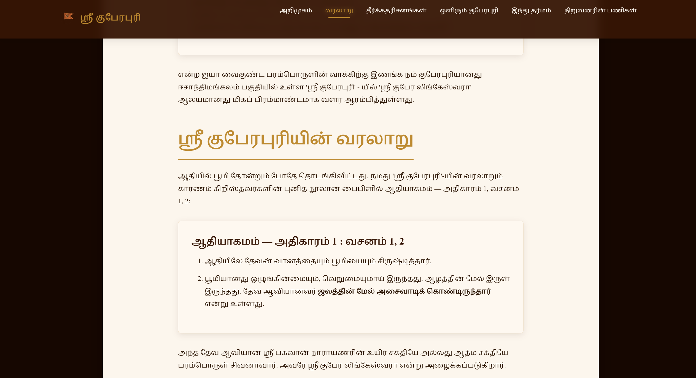
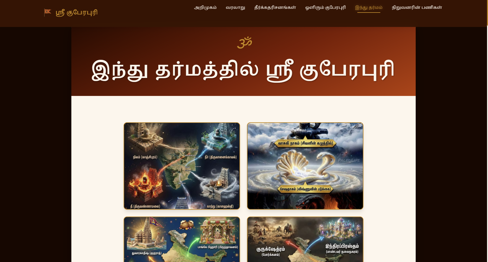
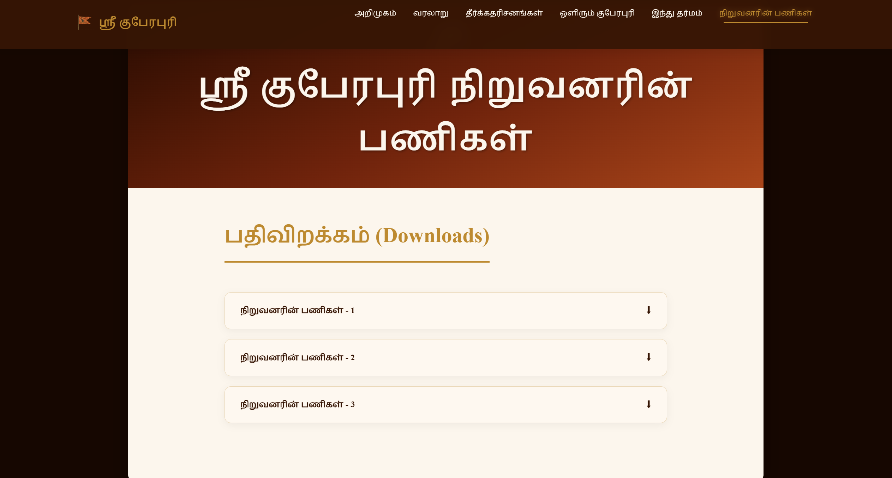

Informational website developed to present the rich history, spiritual content, temple information, references, meditation center, location, and future development plans associated with Sri Kuberapuri into a structured, professional, and accessible digital platform.
The primary objective was to organize extensive historical, spiritual, and temple content into a cohesive, structured web portal. Focus was placed on content readability, visual presentation, responsive design, and simple navigation, allowing visitors to explore without being overwhelmed by information density.
Introduction → History → Prophecies → Sri Kuberapuri → Hindu Dharma → Temple → Meditation Center → Location → Future PlansDivided long-form spiritual text into digestible cards with clear headings, subheadings, and paragraph line-height tuning.
Smooth-scrolling navbar allowing instantaneous jumping between history, temple details, and location maps.
Paired high-resolution temple photographs and reference artwork alongside Tamil descriptive text.
Dedicated showcase for upcoming temple expansion projects, meditation facilities, and community initiatives.

Structured semantic page sections (`<header>`, `<nav>`, `<main>`, `<section>`, `<article>`, `<footer>`).
Custom Flexbox/Grid layouts, spacing scales, color system, typography rules, and responsive media queries.
Frontend interactions, dynamic navigation tracking, collapsible text toggles, and modal image previewers.
| Typography Metric | Implementation Choice | UX Impact |
|---|---|---|
| Font Family | System Tamil Serif / Sans-Serif Stack | High-fidelity rendering across OS & devices |
| Line Height | 1.7 – 1.8 (Expanded Spacing) | Prevents character glyph overlap in Tamil script |
| Paragraph Chunking | Short 3–4 sentence paragraphs | Reduces cognitive fatigue for long reading |
| Content Hierarchy | Distinct H1, H2, H3 font size scaling | Clear visual separation between spiritual topics |
Integrated supporting images within text containers using responsive grid wrapping, creating a balanced visual experience that guides the reader naturally through historical narratives.

• Multi-column grid layout for side-by-side text & images.
• Fixed top navbar with quick jump links.
• Widescreen banner headers and full-width gallery previews.
• Single-column stacked layouts for optimal reading.
• Mobile drawer navigation menu with tap targets.
• Fluid responsive image sizing (`max-width: 100%`).
Full 3-column layout with sidebar directory and hero image frames.
2-column adaptive layout with touch-optimized section padding.
Single column stacked layout with scalable Tamil body text.
• Designed website structure, wireframes, and responsive grid layouts.
• Developed complete frontend codebase using HTML5, CSS3, and JavaScript.
• Implemented section-based navigation and smooth scrolling.
• Formatted and structured extensive Tamil-language content for web readability.
• Integrated images, historical references, maps, and future plan showcases.
• Tested and optimized cross-browser and cross-device performance.
Challenge: Massive Tamil literature.
Solution: Chunked into focused card sections with clear headings & visual dividers.
Challenge: Mixing long text with images.
Solution: Built a balanced grid pairing imagery with contextual paragraphs.
Challenge: Script scaling on mobile.
Solution: Implemented fluid REM spacing and line-height media queries.
"Designed and developed a responsive Tamil-language informational website for Sri Kuberapuri, organizing extensive historical, spiritual, temple, reference, location, and future-plan content into a structured digital experience using HTML5, CSS3, and JavaScript."
| Skill Domain | Technical Competency Demonstrated |
|---|---|
| Frontend Development | HTML5 Semantic Markup & JavaScript Interaction |
| Responsive Web Design | CSS3 Media Queries, Flexbox & Grid Systems |
| UI / UX Design | Information Hierarchy, Typography & Color Scheme |
| Content Architecture | Structuring Heavy Multilingual Text & Media Assets |
Delivered a polished, responsive Tamil cultural informational portal that presents historical and spiritual heritage through an intuitive, accessible digital experience.